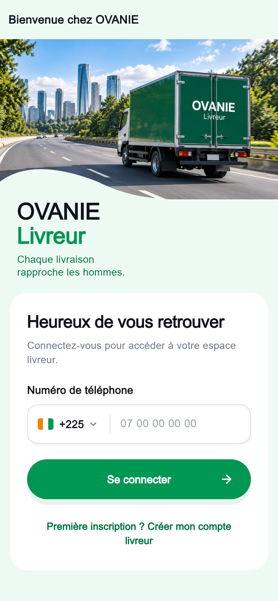
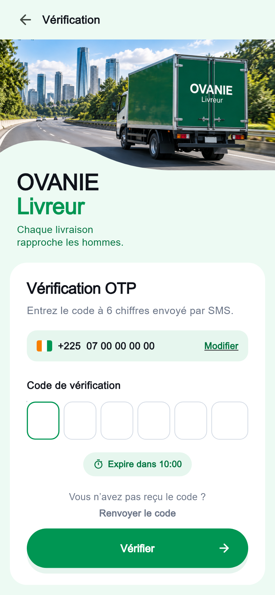
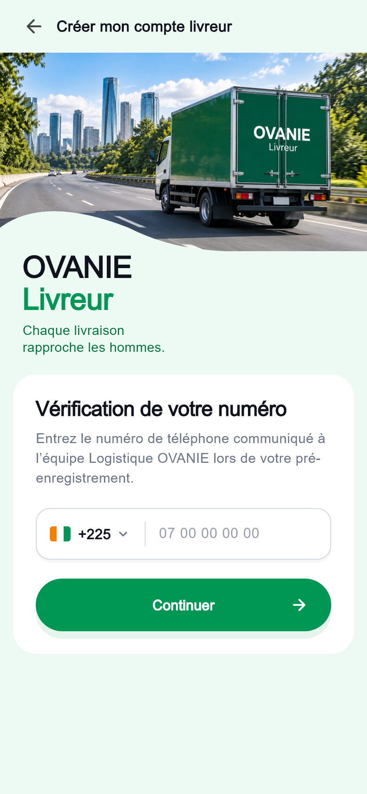
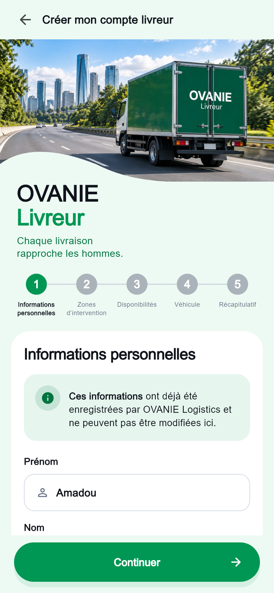
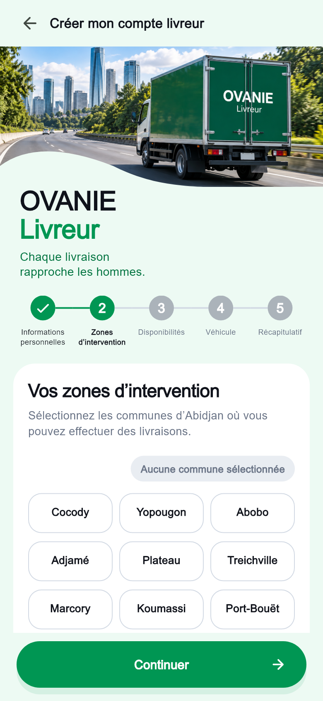
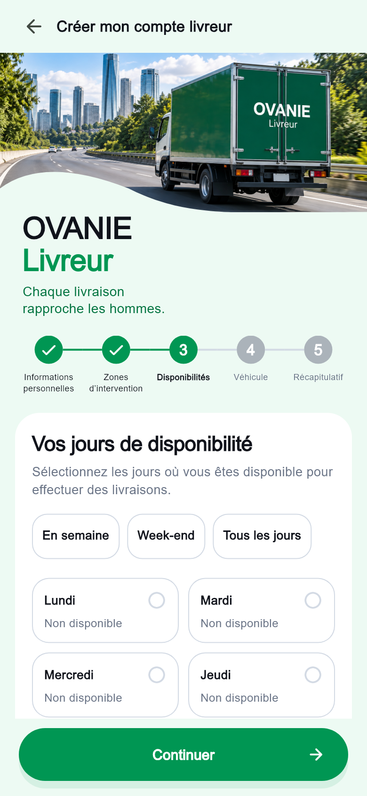
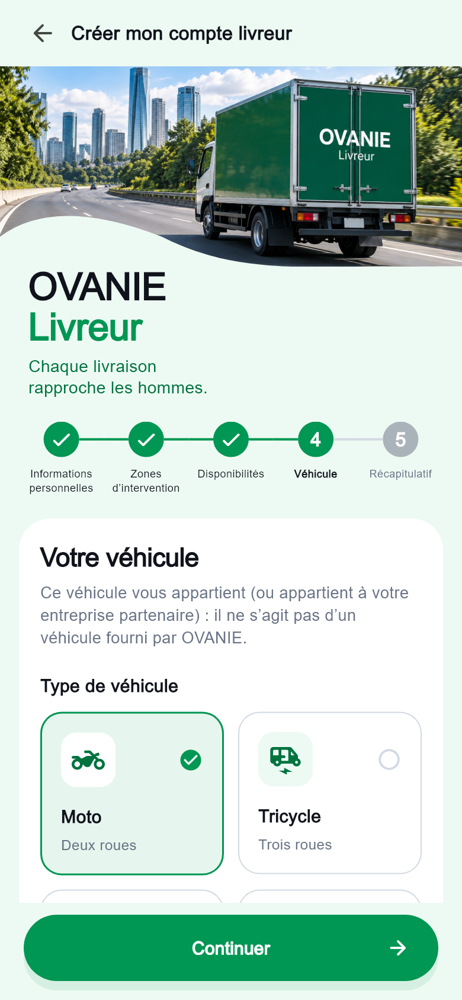
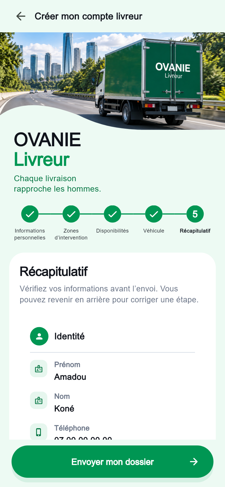
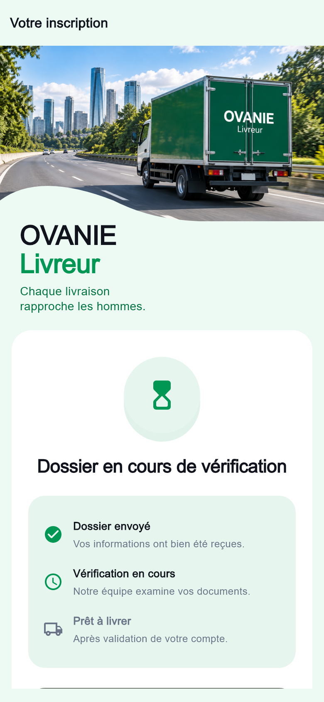

OVANIE Livreur - 9 vues01 Connexion
02 Vérification OTP
03 Vérification du numéro
04 Informations personnelles
05 Zones d’intervention
06 Disponibilités
07 Véhicule
08 Récapitulatif
09 Dossier en vérification